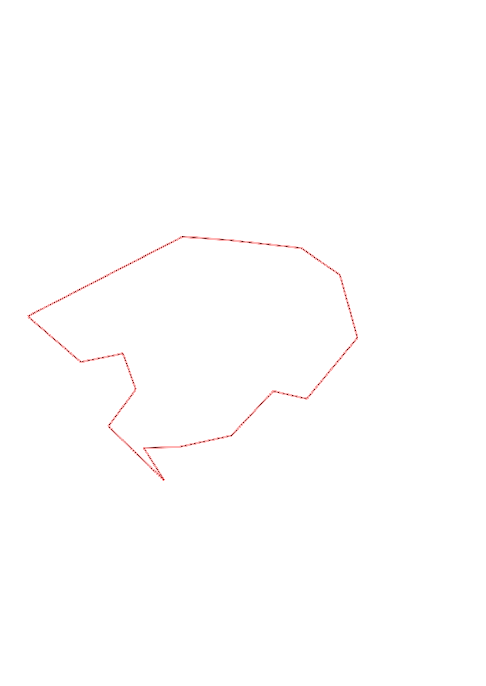
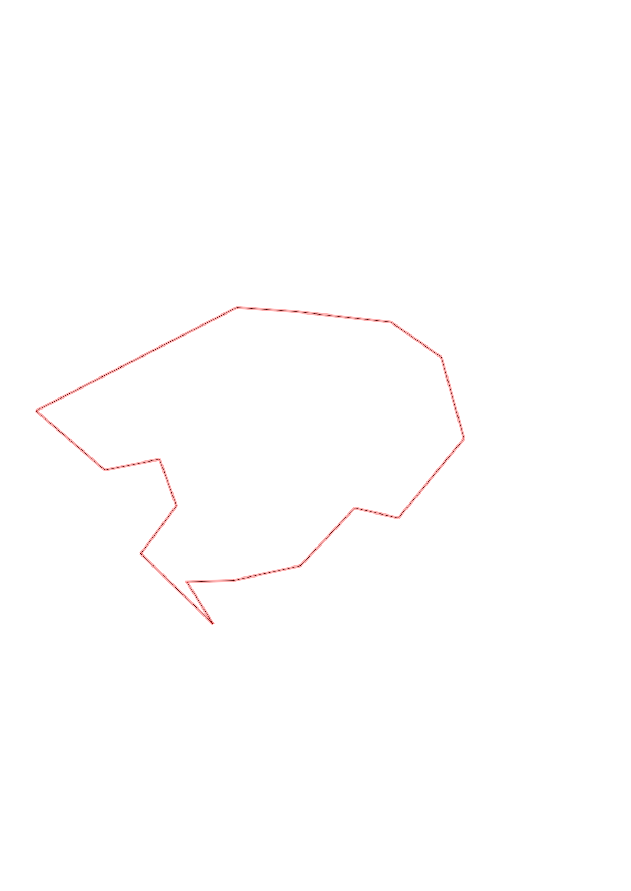

| Control |
Points |
Time Punched |
Distance |
Your Time |
Pace |
Place |
Fastest Time |
Median Time |
% Behind Fastest |
| 63 |
60 |
|
0.24 |
0:01:47 |
07:25 |
3 / 13 |
0:01:34 |
0:02:05 |
13% |
| 80 |
80 |
|
0.34 |
0:03:33 |
10:26 |
1 / 5 |
0:03:33 |
0:03:47 |
0% |
| 48 |
40 |
|
0.4 |
0:02:32 |
06:20 |
2 / 10 |
0:02:29 |
0:03:23 |
2% |
| 60 |
60 |
|
0.22 |
0:02:05 |
09:28 |
1 / 8 |
0:02:05 |
0:02:34 |
0% |
| 81 |
80 |
|
0.52 |
0:03:41 |
07:05 |
2 / 11 |
0:03:21 |
0:04:40 |
9% |
| 46 |
40 |
|
0.42 |
0:08:35 |
20:26 |
7 / 7 |
0:03:46 |
0:04:48 |
127% |
| 61 |
60 |
|
0.31 |
0:03:38 |
11:43 |
2 / 6 |
0:02:54 |
0:04:08 |
25% |
| 34 |
30 |
|
0.48 |
0:03:57 |
08:13 |
5 / 6 |
0:02:42 |
0:03:44 |
46% |
| 65 |
60 |
|
0.3 |
0:02:44 |
09:06 |
1 / 3 |
0:02:44 |
0:04:23 |
0% |
| 92 |
90 |
|
1.13 |
0:10:59 |
09:43 |
1 / 1 |
0:10:59 |
0:10:59 |
0% |
| 72 |
70 |
|
0.46 |
0:02:51 |
06:11 |
1 / 4 |
0:02:51 |
0:04:56 |
0% |
| 58 |
50 |
|
0.28 |
0:03:36 |
12:51 |
4 / 6 |
0:02:22 |
0:03:34 |
52% |
| 51 |
50 |
|
0.25 |
0:01:57 |
07:48 |
3 / 9 |
0:01:43 |
0:02:53 |
13% |
| 35 |
30 |
|
0.3 |
0:02:20 |
07:46 |
3 / 8 |
0:02:08 |
0:02:40 |
9% |
| 37 |
30 |
|
0.51 |
0:04:03 |
07:56 |
1 / 1 |
0:04:03 |
0:04:03 |
0% |
| Finish |
0 |
|
0.25 |
0:01:04 |
04:16 |
1 / 3 |
0:01:04 |
0:02:58 |
0% |
Total Distance Covered: 6.41km
Points Scored: 830
Late Penalty: 0
Final Score: 830
Total Time: 0hours 59minutes 22seconds
Efficiency: 129.49 points/km
 
